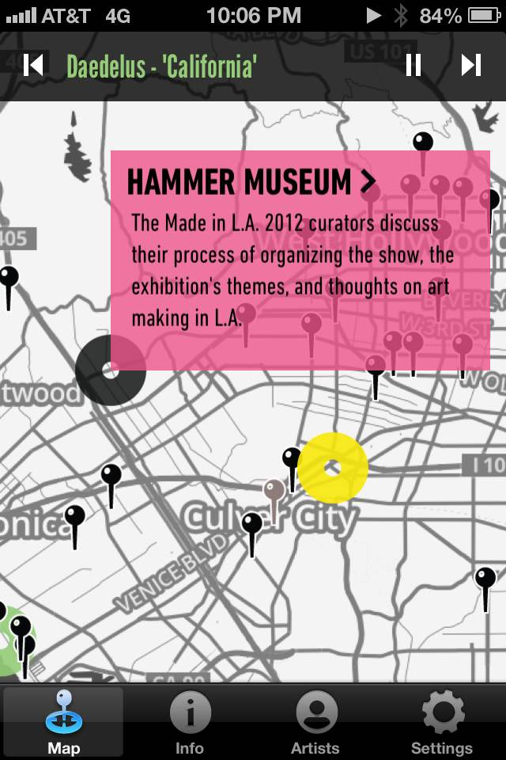

[self locationManager:manager didFailForEverything:error];
NSMeetup, May 2013
R. Kevin Nelson
 @rknLA
@rknLA
The Project

- Geo-triggered audio
- Approx 80 "hotspots" around LA
- Median radius of 50 meters
- Geo-triggered audio in your browser
- https://github.com/rknLA/geo-audio-map
The Triforce
The three technologies that drive Core Location

The Triforce of Efficiency
Core Location gets your whereabouts using cell-tower triangulation
The Triforce of Accuracy
Core Location gets your whereabouts using GPS satellites
The Triforce of Power
Core Location levels up when you enable WiFi
CLLocationManagerDelegate
Continuous Location Updates:
locationManager:didUpdateLocations:
Region Monitoring:
locationManager:didEnterRegion:
CLLocationManager
Continuous Location Updates:
startUpdatingLocation
startMonitoringForSignificantLocationChanges
Region Monitoring:
startMonitoringForRegion:
Underlying Technologies
GPS:
startUpdatingLocation
Cell towers:
startMonitoringForSignificantLocationChanges
startMonitoringForRegion:
Meet the Objects
CLLocation
- coordinate.latitude
- coordinate.longitude
- altitude
- horizontalAccuracy
- verticalAccuracy
- timestamp
CLRegion
- center
- radius
- identifier
all our base are belong to them
Regions are a shared system resource and the total number of regions available systemwide is limited. For this reason, Core Location limits the number of regions that may be simultaneously monitored by a single app.
If you attempt to register a region and space is unavailable, the location manager calls the locationManager:monitoringDidFailForRegion:withError: method of its delegate with the kCLErrorRegionMonitoringFailure error code.
An app can register up to 20 regions at a time. In order to report region changes in a timely manner, the region monitoring service requires network connectivity.
No Significant Changes
Go outside
Photo by Amanda Law. http://www.madeinla2012.org/made-in-l-a-soundmap-app/
TODO
- Write a region comparator
- Find N nearest regions
- Compute intersection and difference arrays
- Start/stop monitoring the differences
- Use
startMonitoringForSignificantLocationChanges